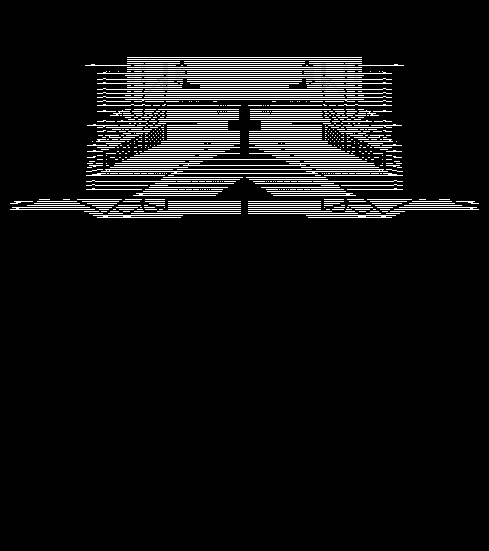
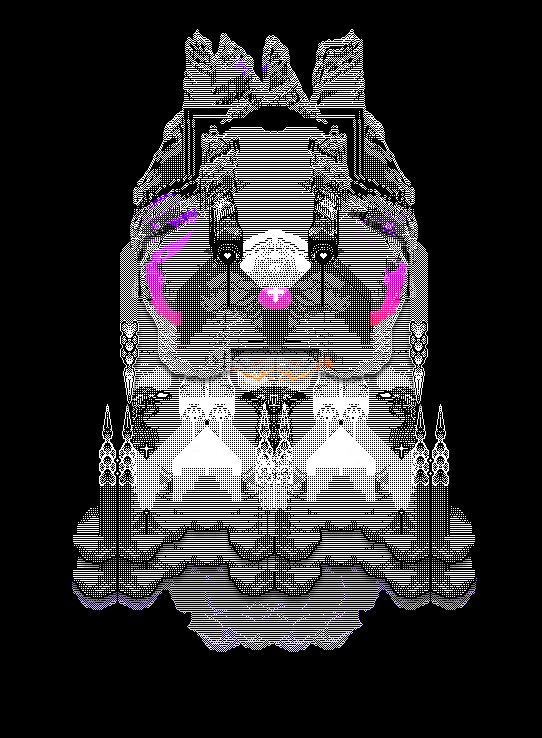
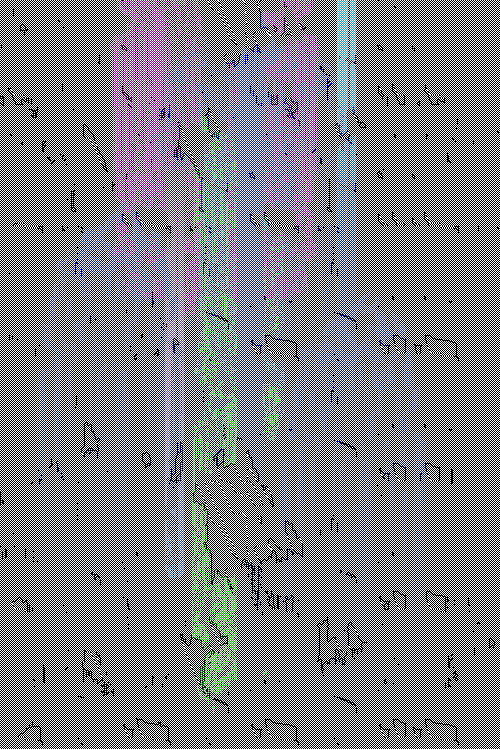
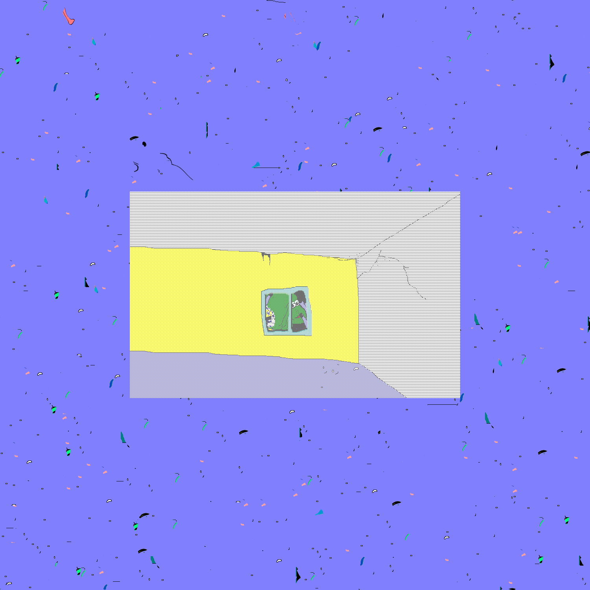

THE_MIDNIGHT_HOUR
"I look at my old (>1 yrs old) work much less than I should. Really, I don't much at all. I avoid it. I don't like it?"

romancing the stoners. 2008-04-18.

RoboPopFloatVoid. 2008-12-10.

rockononetime. 2009-12-01.

HENRYBLUEROOM. 2014-08-21.
Brothers' past work offers insightful observation into her thought process and how she evolved her art over time. Her fascination with 'the pixel' has since curated a distinctly nostalgic art towards net users for decades to come.